Основные направления гелиоэнергетики
Говоря о солнечной энергетике, имеют в виду технологии преобразования энергии солнечного света в другие виды энергии, такие как тепловую и электрическую.
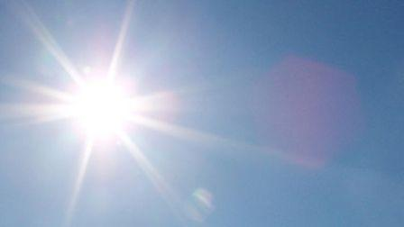
Широко известен тот факт, что солнце излучает огромное количество энергии. По приблизительным подсчётам авторитетных международных организаций количество энергии, потребляемое сегодня человечеством, колеблется на уровне 245 миллионов баррелей нефтяного эквивалента в сутки, а интенсивность потока солнечного излучения у поверхности Земли, при перерасчёте на всю поверхность, составляет 1,74*Е+17 Вт.
То есть, Солнце «отправляет» нам энергии приблизительно в 10 500 раз больше, чем мы сегодня потребляем. Объем солнечной энергии практически не исчерпаем, поэтому очевидно, что такого количества энергии нам хватит на сотни и даже тысячи лет вперед! С учётом всё большего понимания экономических, экологических и прочих проблем, связанных с использованием традиционных энергоресурсов (уголь, нефть, природный газ), интерес к солнечной энергетике с каждым днем возрастает.
На сегодняшний день, когда в мировой экономике все отмечают существенный спад, отрасль солнечной энергетики, одна из не многих, которая отчитывается о положительной динамике роста. Причём показатели эти достаточно впечатлительные и заставили удивиться даже скептиков солнечной энергетики. За последние 10 лет ежегодный средний темп роста (CAGR) новых инсталляций солнечных панелей в мире составил 50,4%, а общий фонд установленных батарей на конец 2010 года приблизился к 39,5 ГВт.
Также интересен прогноз, который предоставляют эксперты рынка на следующие 5 лет. По данным Европейской фотоэлектрической ассоциации (EPIA), общий фонд солнечных модулей на конец 2016 года составит 195,9 ГВт, то есть увеличиться почти в 5 раз!
Солнечную энергетику чаще всего разделяют по направлениям:
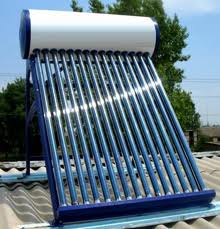
• гелиотермальная энергетика, где нагрев теплоносителя для отопления, ГВС и прочих нужд происходит при помощи прямого преобразования солнечного излучения в тепловую энергию;
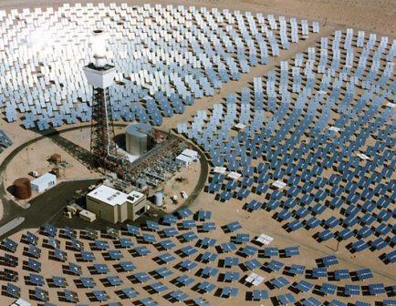
• получение электроэнергии с помощью тепловых машин, нагрев рабочего тела в которых, происходит за счет солнечной энергии;
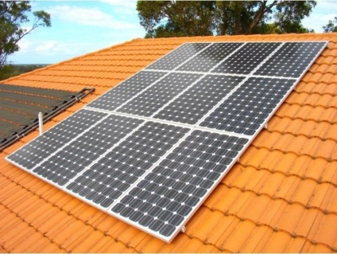
• преобразование солнечной энергии в электроэнергию с помощью солнечной панели (солнечной батареи).
Солнечные панели
Под солнечной панелью понимают набор, соединённых между собой фотомодулей. Фотомодуль (далее модуль) в свою очередь состоит из фотоэлементов или фотоэлектрических преобразователей (ФЭП).
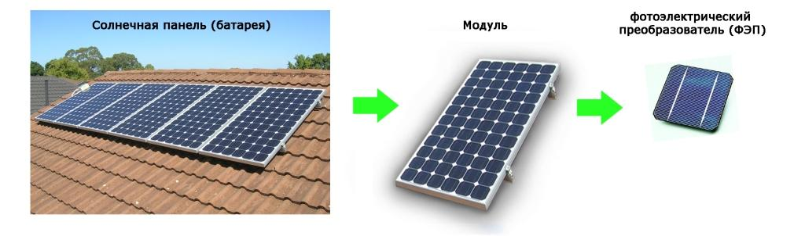
Отдельный фотоэлектрический преобразователь - это полупроводниковый прибор, преобразующий энергию фотонов (энергию света) в электрическую энергию. Преобразование энергии происходит на уровне атомного строения тела. Наиболее распространённый материал для изготовления ФЭП это кремний. Каждый отдельный ФЭП способен вырабатывать напряжение сравнительно малой величины (около 0,5 В), поэтому отдельные элементы собирают в модули, а модули в панели.
В зависимости от задачи энергоснабжения используются различные схемы коммутации солнечных панелей. Например, для зарядки мобильного телефона одна, для работы автономного освещения другая, для работы электросети здания и работы с «зелёным тарифом» третья и т.д. («зелёный тариф» - это специальный тариф, по которому государством закупается электрическая энергия, произведенная на объектах электроэнергетики, которые используют альтернативные источники энергии).
В результате преобразования энергии света солнечная панель на своём выходе генерирует постоянное электрическое напряжение величиной, как правило, 12 или 24 вольта.
Хотя внутренние электронные схемы многих потребителей электроэнергии (телевизор, компьютер, музыкальный центр и другие) работают на постоянном напряжении (и для работы имеют встроенные блоки питания), всё же на сегодняшний день, в «обычной» электрической сети переменное напряжение, и все приборы адаптированы для питания от сети с переменным напряжением. 220 вольт для однофазной сети, либо 380 вольт для трёх фазной сети. Поэтому одних солнечных панелей, с постоянным напряжением, для полноценного обеспечения электроэнергией не достаточно. Дополнительно необходим «инвертор» - электронное устройство, которое преобразовывает постоянное напряжение в переменное.
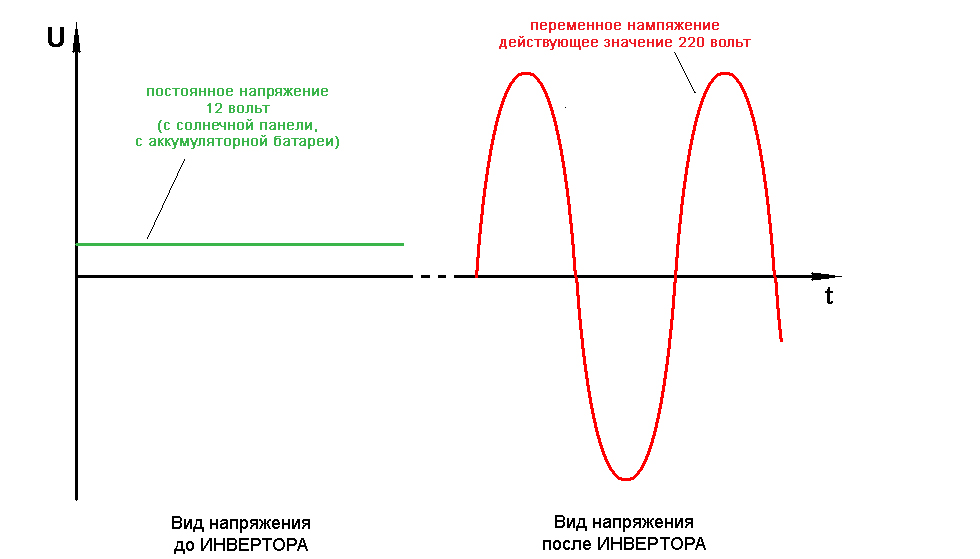
Солнечная панель вырабатывает электроэнергию при попадании не её поверхность света, то есть, в тёмное время суток солнечная панель «отдыхает». Но, как правило, нам необходима электроэнергия «круглые» сутки, поэтому в систему солнечных панелей вводиться блок аккумуляторных батарей. По своему назначению он выполняет ту же функцию, что и аккумулятор в автомобиле или «батарейка» в мобильном телефоне, накапливает электроэнергию в момент её излишка, и отдает в момент её нехватки.
Для отслеживания и управления всеми процессами работы солнечных панелей используется электронное устройство – контроллер.
Типовая схема подключения солнечной панели выглядит следующим образом.
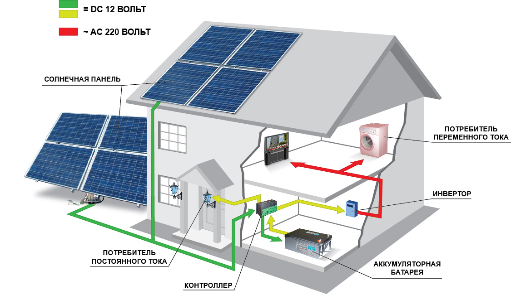
Для уменьшения капитальных вложений в систему на солнечных панелях, необходимо использовать электрооборудование с высокой энергоэффективностью. При выборе бытовых электроприборов необходимо обращать особое внимание на класс энергоэффективности. Например, для освещения можно использовать светодиодные лампы, которые в 10 раз эффективнее ламп накаливания, и более чем в 2 раза эффективнее энергосберегающих люминесцентных ламп.
Максимальную эффективность солнечные панели имеют при «падении» солнечных лучей перпендикулярно к поверхности модуля. Так как солнце все время «перемещается» по небу, для эффективного использования панели возможно применение устройств слежения и поворота панели к солнцу.
Пример панели без системы слежения («жестко укреплённой»)
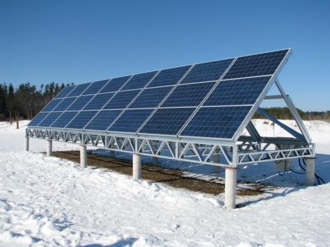
Пример панели с системой слежения (поворота) «за Солнцем»
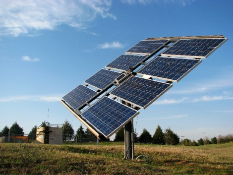
При установке солнечных панелей, необходимо знать основные характеристики ФЭП и особенности работы системы на солнечных панелях. В зависимости от материала и технологии изготовления, ФЭП отличаются коэффициентом полезного действия (КПД), устойчивостью к повышению температуры, габаритами, и конечно же стоимостью.
Сегодня оптимальными для применения и самыми распространёнными являются ФЭП из моно- и поли- кристаллического кремния, хотя есть и другие варианты решения (панели на аморфном кремнии, тонкоплёночные панели, нанокристаллические панели и другие).
Применительно к солнечной панели, КПД - это параметр, который показывает какая часть энергии светового потока преобразовывается в электрическую. Для разных регионов Украины, годовая суммарная энергия светового потока, на единицу площади различна и колеблется от 1000 до 1350 кВт•ч/м? для горизонтальной поверхности. Показатель КПД у солнечных панелей (на время написания статьи) составляет около 14 %. Этот параметр будет влиять на суммарную площадь панелей, и как следствие на площадь, которая будет «покрыта» панелями.
Например, если КПД солнечной панели составляет 12 % и освещается световым потоком интенсивностью 1100 Вт/м2, то выходная мощность этой панели составит 1100 Вт/м2 * 0,12 = 132 Вт с 1 м2 площади солнечной панели.
Устойчивость ФЭП к повышенной температуре подразумевает сохранение солнечной панелью выходных характеристик (напряжения, тока) с увеличением температуры. Рабочие параметры панели рассчитываются при температуре окружающей среды 25°С, с увеличением этого параметра электрические характеристики и срок службы ФЭП изменяются. И если мы говорим о продолжительном сроке эксплуатации в условиях с реальной температурой выше, чем 25°С, то этим параметром пренебрегать нельзя.
К особенностям работы системы также относится место и способ установки панелей. Эти детали влияют на количество оборудования и интенсивность солнечного света для конкретного модуля. Кроме того, количество и модель устройств в системе солнечного электроснабжения, зависит от назначения объекта и потребителя, которому необходимо обеспечить электроснабжение. Например, могут быть варианты: жилой дом, производственный объект, сельскохозяйственный объект, объекты, требующие энергии больше в дневное или ночное время.
С учётом всех перечисленных факторов необходимо иметь в виду, что установка и расчёт системы солнечных панелей (батарей) должна проводиться специалистом.
Основные преимущества солнечных панелей:
Срок эксплуатации. На сегодняшний день, срок службы солнечных панелей доведён до 20-25 лет.
По известным причинам, интерес к солнечным панелям растёт с каждым годом, отсюда и старание производителей обеспечить рынок. Как отмечают аналитики, сегодня объёмы производства не отвечают потребностям, и хотя производственные мощности увеличиваются с каждым годом, стоимость солнечной панели экономически интересна пока не во всех странах. Производители стремятся оптимизировать стоимость затрат на изготовление солнечных панелей, а возрастающий спрос способствует «сближению» процессов производства и покупки.
На практике, при определении оценочной стоимости солнечной панели, говорят о стоимости за 1 Ватт электрической мощности. Понимая, что если 1 Ватт стоит условно 2 US$, то панель мощность 10 Ватт стоит около 20 US$, а панель мощностью 100 Ватт около 200 US$. Стоимость солнечной панели постоянно уменьшается, с динамикой 50 US$/Ватт в 70-е годы, до 1,5 US$/Ватт на момент написания статьи. Очевидно, что стоимость солнечной панели будет продолжать уменьшаться.
Так как вся система на солнечных панелях состоит не только из самих панелей, а еще содержит устройства, упомянутые выше, то и стоимость всей установки выше. На сегодня монтаж объекта «под ключ» в Украине составляет приблизительно 4-5 US$ за 1 Ватт.
Так как с уменьшением мощности потребителей, уменьшается мощность и стоимость системы электроснабжения на солнечных панелях, эффективно рассматривать работу солнечных панелей с энергосберегающим оборудованием, например применять светодиодные лампы для освещения, тепловые насосы для отопления и индукционные печи для приготовления пищи.
Как уже отмечалась, цифры отражающие сегодня характеристики развития солнечной энергетики стабильно растут. Солнечная панель давно перестала быть термином узкого круга технических специалистов и сегодня о солнечной энергетике не только говорят, но и получают прибыль от реализованных проектов.
В сентябре 2008 года было завершено строительство солнечной электростанции расположенной в Испанском муниципалитете Ольмедилья-де-Аларкон. Пиковая мощность электростанции Olmedilla достигает 60 МВт.
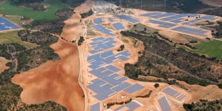
Солнечная станция Olmedilla
В Германии эксплуатируется солнечная станция Waldpolenz, которая находится в Саксонии, в районе городов Брандис и Бенневиц. Пиковая мощность этой станции составляет 40 МВт, благодаря чему она входит в число крупнейших солнечных электростанций мира.
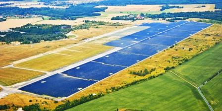
Солнечная станция Waldpolenz
Неожиданно для многих, хорошими новостями начала радовать и Украина. Согласно данным ЕБРР, Украина уже в ближайшее время может занять место лидера среди экологически чистых экономик Европы, особенно в отношении рынка солнечной энергии, который является одним из наиболее перспективных рынков возобновляемых источников энергии.
В данный момент, крупнейшая солнечная электростанция Европы располагается именно на Украине, и планируется, что рынок солнечной энергии Украины ежегодно будет расти на 90 % до 2016 года. К тому же, Энергетическая стратегия Украины рассчитывает достигнуть до 20 % производства энергии из возобновляемых источников до 2020 года, а украинский льготный тариф в отношении альтернативной энергии почти в два раза превосходит тариф некоторых стран «большой восьмерки».
Станция «Охотниково» (АР Крым) общей мощностью 80 МВт построена на базе поликристаллических солнечных панелей, расположена более чем на 160 гектарах и состоит из примерно 360 000 модулей. Солнечный парк «Охотниково» будет производить 100 000 МВт-часов электроэнергии в год и сможет сократить выбросы углекислого газа до 80 000 тонн в год. Данная солнечная электростанция сможет удовлетворить потребности в электроэнергии около 20 000 домохозяйств.
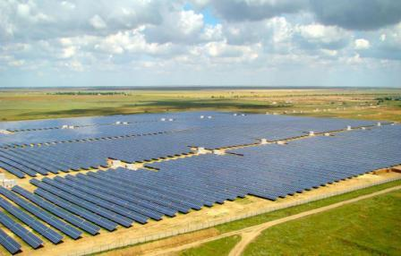
СЭС «Охотниково» мощностью 80 МВт (АР Крым)
Станция «Перово» (АР Крым) мощностью 100 МВт реализована в 2011 году и является одной из крупнейших в своем роде в мире. Солнечная электростанция состоит из 440 тысяч кристаллических солнечных фотоэлектрических модулей, соединенных 1500 км кабеля, и установленных на более 200 га площади, что составляет около 259 футбольных полей. Установка будет производить 132500 МВт*ч чистой электроэнергии в год, что достаточно для удовлетворения плановой пиковой потребностей в электроэнергии Симферополя, столицы Крыма. Станция позволяет сократить выбросы CO2 на 105 тысяч тонн в год. В строительстве станции были использованы основные компоненты, включая солнечные модули и инверторы, от ведущих европейских и азиатских производителей.
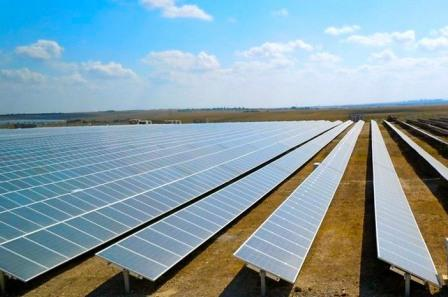
СЭС «Перово» мощностью 100 МВт (АР Крым)